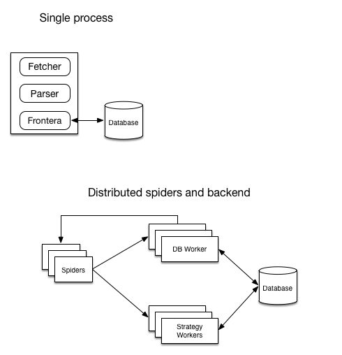

Run modes¶
A diagram showing architecture of running modes:
Mode |
Components needed |
|---|---|
Single process |
single process running the crawler |
Distributed |
spiders, strategy worker (s) and db worker(s). |
Single process¶
new_frontera is instantiated in the same process as fetcher (for example in Scrapy). Read more on how to use that mode here.
This mode is suitable for developing the crawling strategy locally and applications where its critical to fetch small number of documents fast.
Distributed¶
Spiders and backend are distributed. Backend is divided on two parts: strategy worker and db worker. Strategy worker instances are assigned to their own part of spider log.
Use :setting:`BACKEND` in spider processes set to
MessageBusBackendIn DB and SW workers :setting:`BACKEND` should point to
DistributedBackendsubclasses. And selected backend have to be configured.Every spider process should have it’s own :setting:`SPIDER_PARTITION_ID`, starting from 0 to :setting:`SPIDER_FEED_PARTITIONS`. Last must be accessible also to all DB worker instances.
Every SW worker process should have it’s own :setting:`SCORING_PARTITION_ID`, starting from 0 to :setting:`SPIDER_LOG_PARTITIONS`. Last must be accessible to all SW worker instances.
Both spiders and workers should have it’s :setting:`MESSAGE_BUS` setting set to the message bus class of your choice and selected message bus have to be configured.
Only Kafka message bus can be used in this mode out of the box.
This mode is designed for crawling of web-scale large amount of domains and pages.